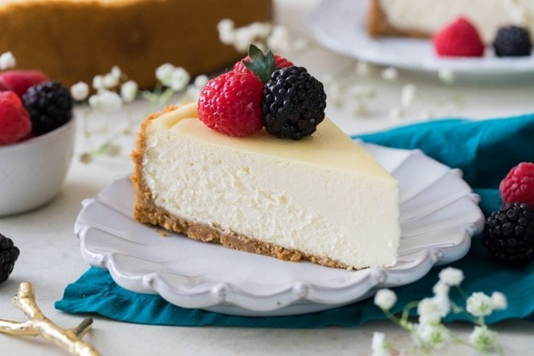

Chessecake

Rico chessecake
- graham cracker crumbs
- Sugar
- Cream Chesse
- Butter
- Eggs
- Salt
- Preheat oven to 325F
- Prepare Graham Cracker crust first by combining graham cracker crumbs, sugar, and brown sugar, and stirring well. Add melted butter and use a fork to combine ingredients well
- Pour crumbs into a 9” Springform pan and press firmly into the bottom and up the sides of your pan. Set aside
Back